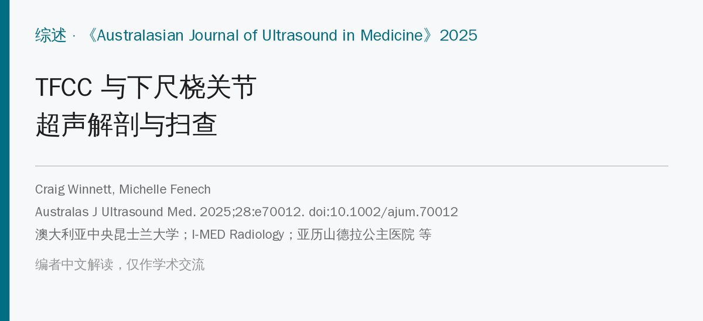
🔖原文信息（编者中文重排）
📚 文献信息
▪ Winnett C, Fenech M. Sonographic Anatomy and Imaging of the Triangular Fibrocartilage Complex and the Distal Radio-Ulnar Joint. Australas J Ultrasound Med. 2025;28:e70012. doi:10.1002/ajum.70012
▪ 作者单位：澳大利亚中央昆士兰大学健康、医学与应用科学学院；I-MED Radiology；亚历山德拉公主医院、皇家布里斯班妇女医院医学影像科
▪ 文章类型：综述（附示意图、MRI、超声图和视频）；CC BY 4.0 开放获取
尺侧腕痛常被称为腕部的“腰痛”或“黑匣子”。这篇综述把三角纤维软骨复合体（TFCC）和下尺桡关节（DRUJ）拆成一个个能用超声看到的结构，逐个讲解剖、怎么扫、正常长什么样。
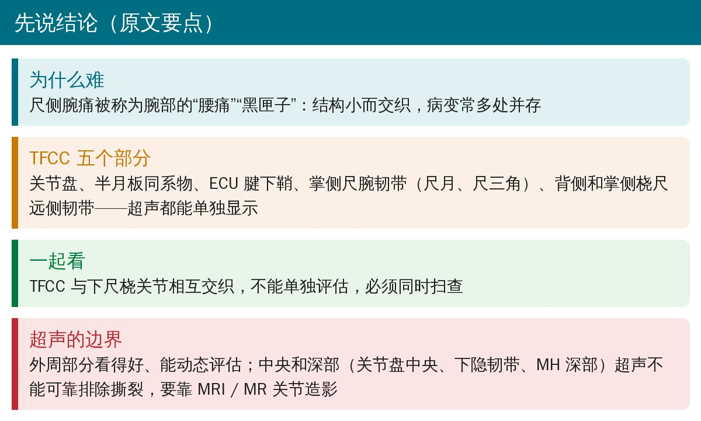
🔖原文要点（编者整理）
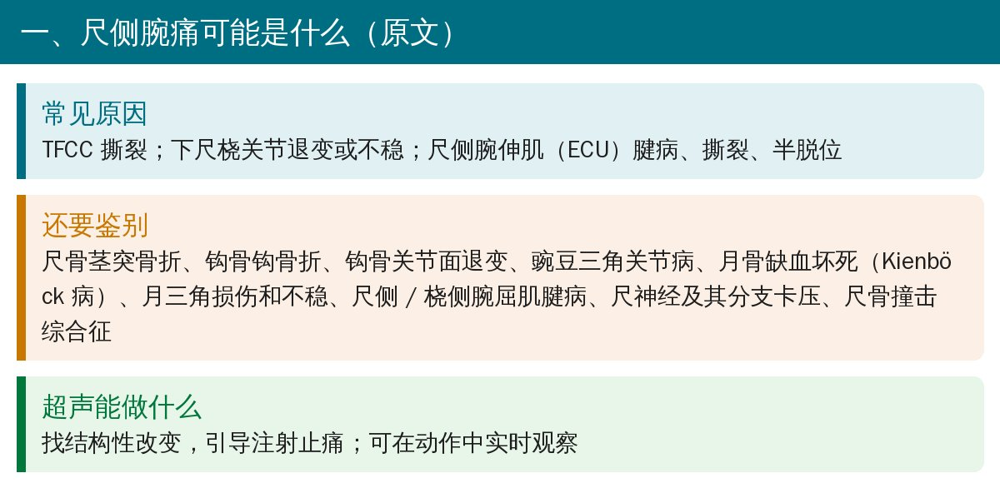
🔖尺侧腕痛的原因（据原文整理）
临床上这些病变常常同时存在，所以单靠查体很难定位，超声常被用来找结构性改变、引导注射止痛。不过 TFCC 深部和中央部仍需 MRI。
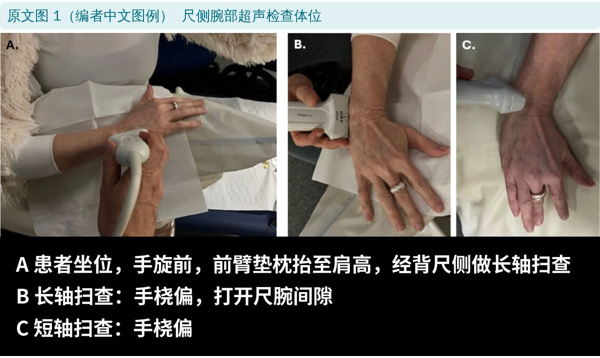
🔖原文图 1（编者中文图例） 尺侧腕部超声检查体位
• 患者坐位面对检查者，前臂垫枕抬到肩高；手旋前（掌心向下），或把腕尺侧朝向天花板
• 这样检查中可以做屈腕、伸腕、桡偏、尺偏
• 背侧、掌侧、尺侧三个方向都要扫；耦合剂要多
• 宽探头看骨性结构和下尺桡关节全貌；小探头在动态动作中保持接触，并绕过尺骨茎突的骨性突起
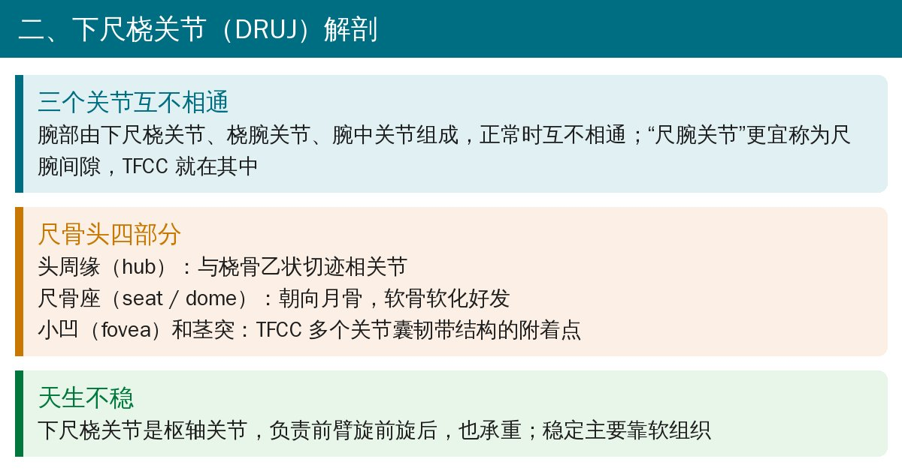
🔖下尺桡关节解剖（据原文整理）
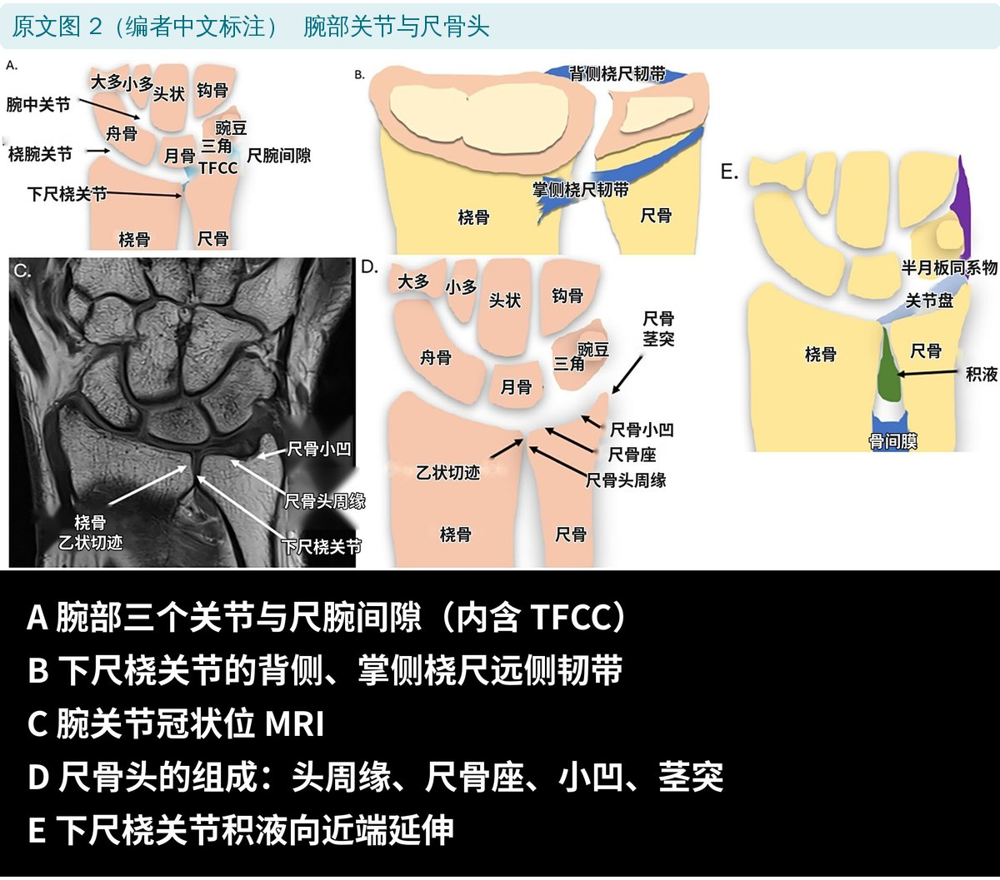
🔖原文图 2（编者中文标注） 腕部关节与尺骨头
TFCC 的主要功能是稳定下尺桡关节、作为尺腕间隙的减震垫；背侧和掌侧桡尺远侧韧带随腕的位置协同稳定关节。TFCC 和下尺桡关节交织在一起，超声上不能单独评估，必须一起看。
• 旋前方肌：前臂远端掌侧的梯形肌，分浅、深两头，负责旋前；由正中神经的分支骨间前神经支配（神经在肌肉深面，也支配下尺桡关节感觉）。它绷紧关节囊，防止冗余囊袋在旋转时卡入关节，并限制桡骨相对尺骨向背侧移位
• 骨间膜：桡尺骨之间的宽片状结缔组织，防止桡骨向近端移位和向背侧移位；最远端增厚为远侧斜束，止于桡骨乙状切迹背侧下缘，协助稳定下尺桡关节
• 前臂骨折（尤其 Galeazzi 骨折）要评估骨间膜，它常伴骨间膜损伤和下尺桡关节脱位或半脱位
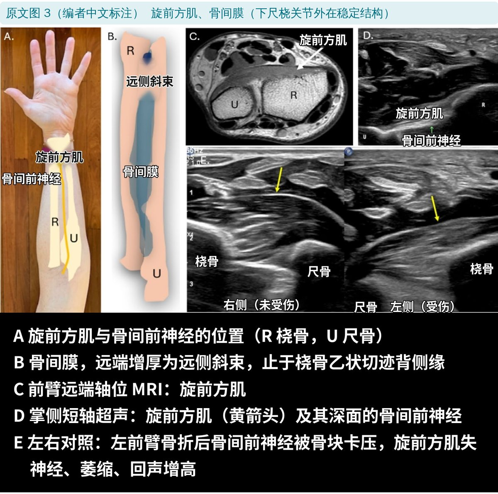
🔖原文图 3（编者中文标注） 旋前方肌、骨间膜
• 看关节完整性、骨性改变、滑膜炎和不稳；骨赘提示退变，严重 TFCC 撕裂可致关节不稳、进行性关节炎
• 在旋前和最大旋后两个位置都要扫；做内外、远近方向的动态扫查
• 向近端扫到旋前方肌水平：关节积液会向近端延伸，可在短轴和长轴上测量
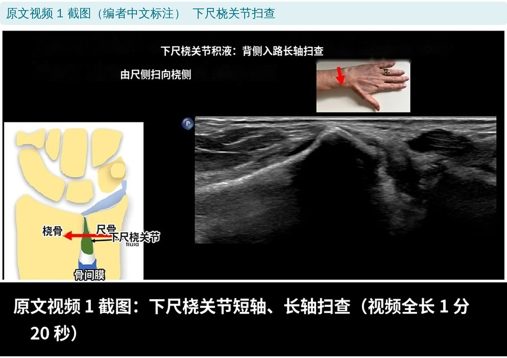
🔖原文视频 1 截图（编者中文标注） 下尺桡关节积液：背侧入路长轴，由尺侧扫向桡侧
TFCC 的命名在文献里很混乱，作者采用最一致的五部分：① 关节盘 ② 半月板同系物 ③ ECU 腱下鞘 ④ 掌侧尺腕韧带（尺月、尺三角）⑤ 背侧和掌侧桡尺远侧韧带。它的三大功能：稳定下尺桡关节、稳定尺腕间隙、缓冲并传导腕部负荷。
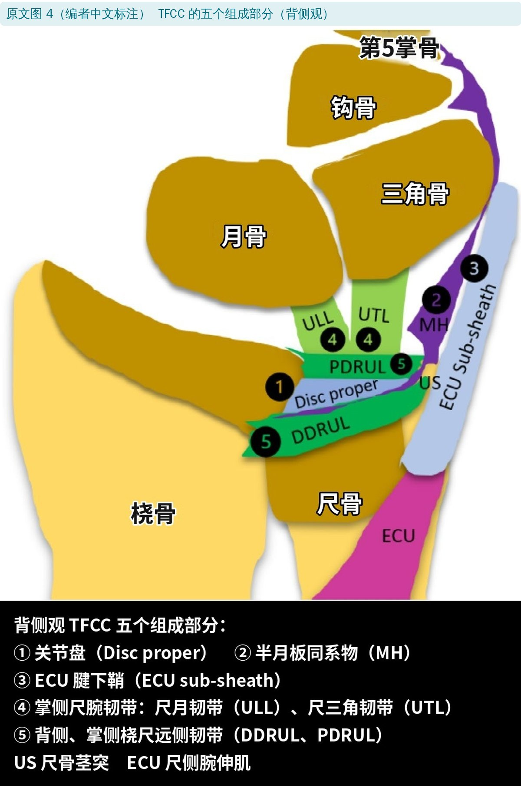
🔖原文图 4（编者中文标注） TFCC 的五个组成部分（背侧观）
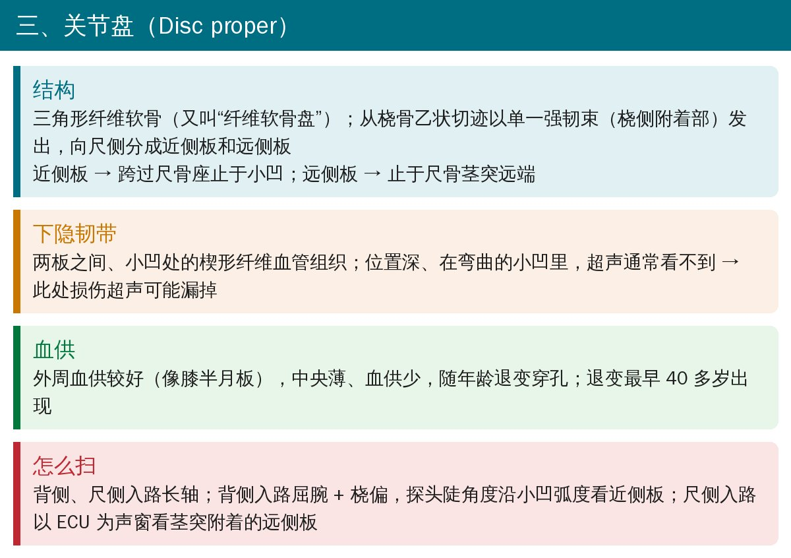
🔖关节盘（据原文整理）
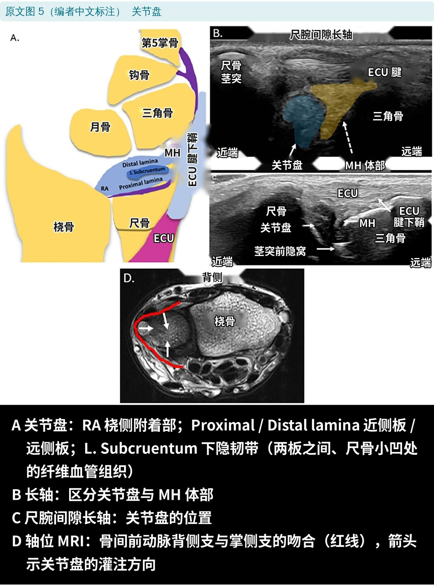
🔖原文图 5（编者中文标注） 关节盘
作者特意不用“关节软骨盘”这个叫法，因为它是纤维软骨而非透明软骨——纤维软骨富含致密编织的胶原纤维，抗压能力强，和椎间盘、耻骨联合、膝半月板同类。超声上关节盘与近端的尺骨关节软骨、远端的 MH 体部可以区分，改变声束角度可见回声差异。
局限：超声不能可靠排除关节盘中央撕裂，尤其正尺骨变异时中央负荷大大增加；怀疑中央撕裂要做 MRI，MRI 还能显示月骨、三角骨、尺骨头的软骨软化。
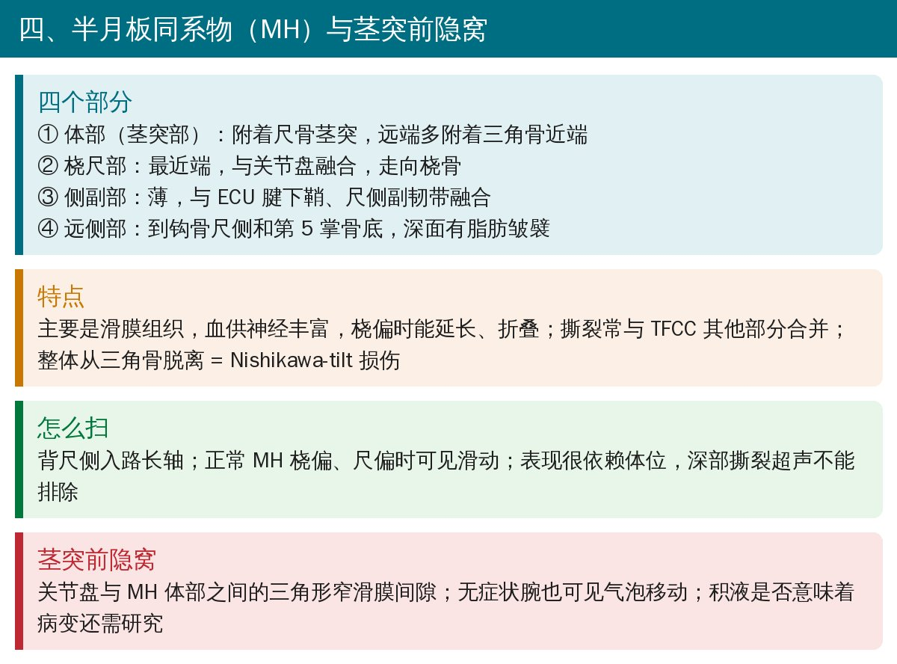
🔖半月板同系物与茎突前隐窝（据原文整理）
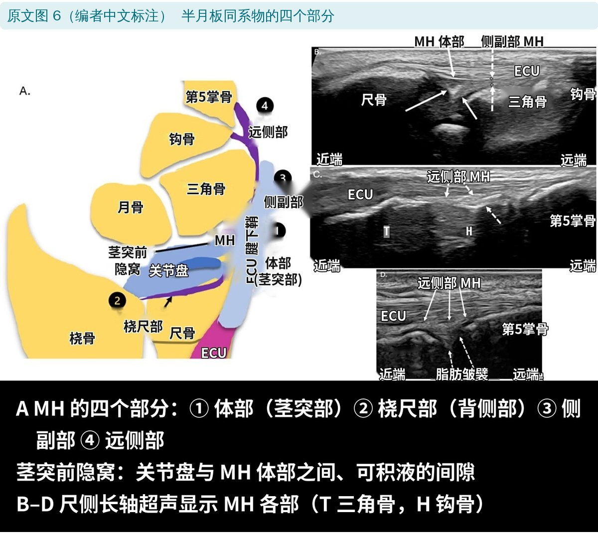
🔖原文图 6（编者中文标注） 半月板同系物的四个部分
尺侧副韧带：位于 MH 浅面、ECU 腱下鞘深面的薄纤维韧带，是否真实存在有争议；超声上无法与 MH 或 ECU 腱下鞘区分，常被称为“尺侧关节囊”。
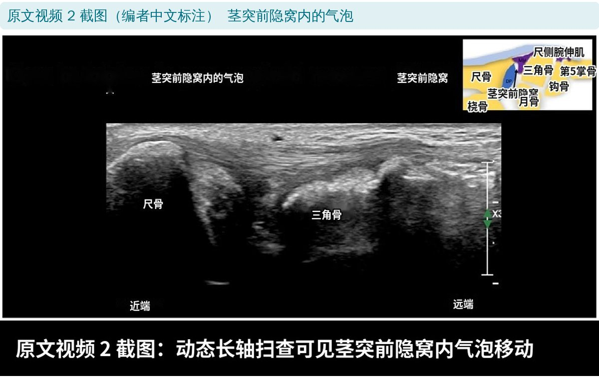
🔖原文视频 2 截图（编者中文标注） 茎突前隐窝内的气泡
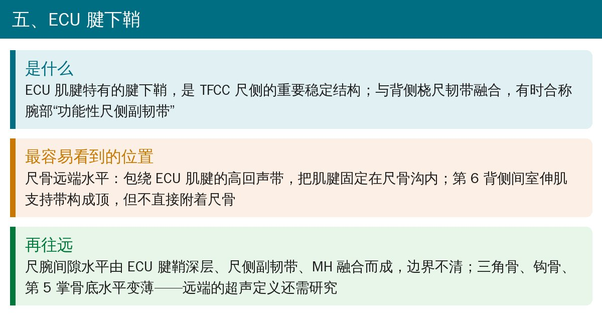
🔖ECU 腱下鞘（据原文整理）
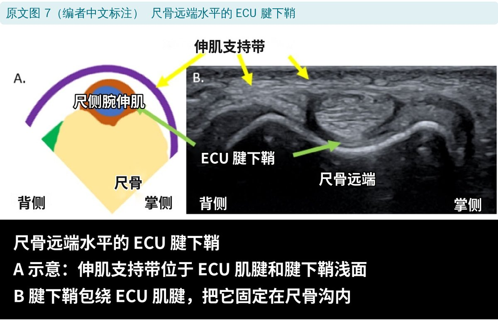
🔖原文图 7（编者中文标注） 尺骨远端水平的 ECU 腱下鞘
伸肌支持带不直接附着尺骨，作用是防止 ECU 肌腱收缩时“弓弦样”弹起；腱下鞘的位置随旋前、旋后、中立位改变，中立位时位于尺骨茎突背内侧，与尺侧副韧带几乎分不开。
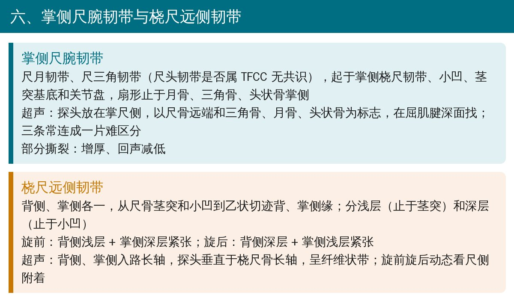
🔖掌侧尺腕韧带与桡尺远侧韧带（据原文整理）
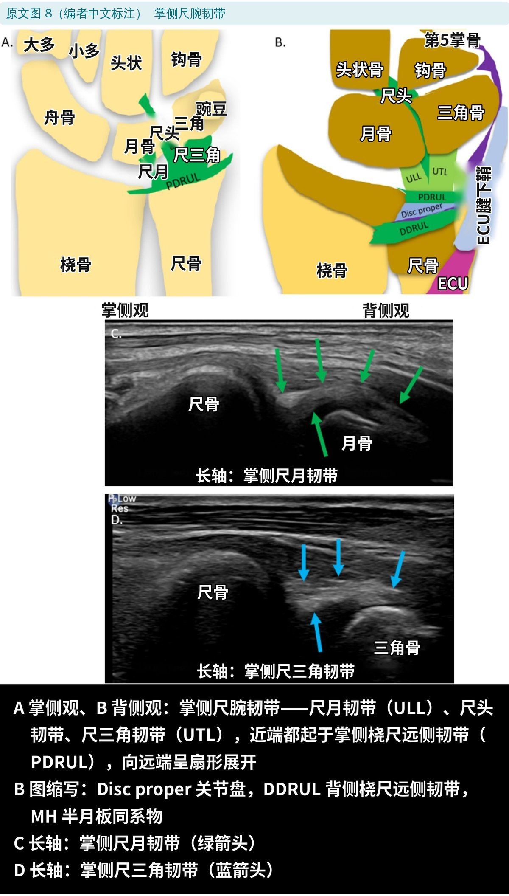
🔖原文图 8（编者中文标注） 掌侧尺腕韧带
腕背侧的尺月、尺三角关节没有专门的韧带，只称“背侧关节囊”。桡尺远侧韧带深层包绕关节盘并与其周缘融合，所以关节盘周缘更厚；浅、深层分别止于茎突和小凹，在尺侧形成“四臂”结构。
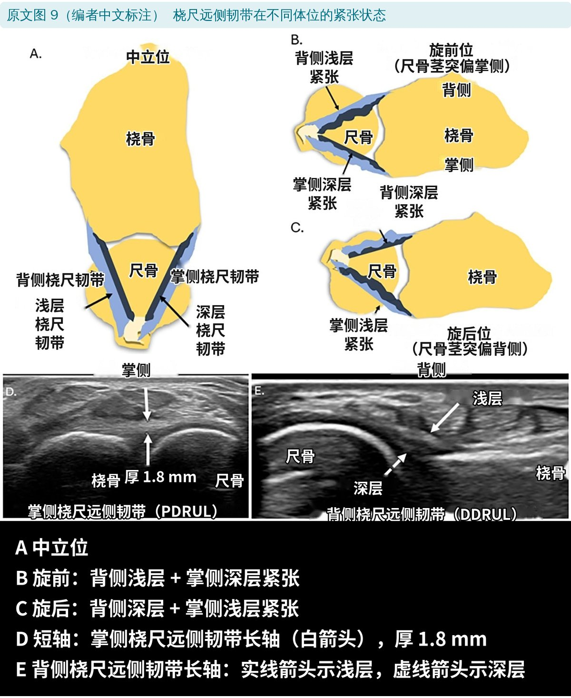
🔖原文图 9（编者中文标注） 桡尺远侧韧带在不同体位的紧张状态
| 体位 | 紧张的韧带 |
|---|---|
| 旋前 | 背侧桡尺远侧韧带浅层 + 掌侧桡尺远侧韧带深层 |
| 旋后 | 背侧桡尺远侧韧带深层 + 掌侧桡尺远侧韧带浅层 |
据原文第 4.6 节整理
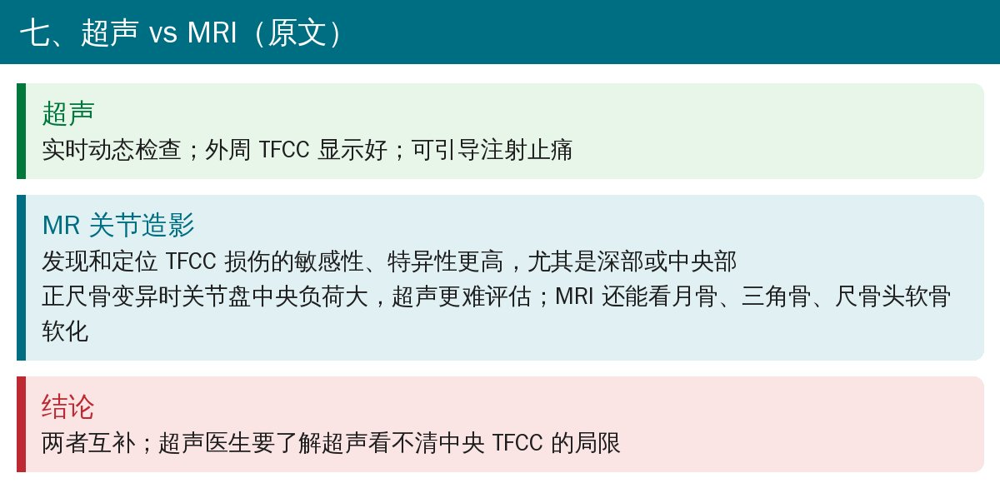
🔖超声 vs MRI（据原文整理）
| 结构 | 超声能否评估 | 扫查要点 |
|---|---|---|
| 下尺桡关节 | 能（积液、骨赘、滑膜炎、不稳） | 旋前 + 最大旋后；向近端扫到旋前方肌 |
| 关节盘外周 | 能 | 背侧入路屈腕桡偏；尺侧入路以 ECU 为声窗 |
| 关节盘中央、下隐韧带 | 不能可靠排除 | 需 MRI / MR 关节造影 |
| 半月板同系物 | 能看，深部撕裂不能排除 | 背尺侧长轴，桡偏尺偏看滑动 |
| ECU 腱下鞘 | 尺骨远端水平最稳定 | 远端定义尚不清楚 |
| 掌侧尺腕韧带 | 能（部分 / 完全撕裂） | 掌尺侧长轴，屈肌腱深面 |
| 桡尺远侧韧带 | 能 | 背、掌侧长轴，旋前旋后动态看 |
各结构超声评估要点（据原文整理）
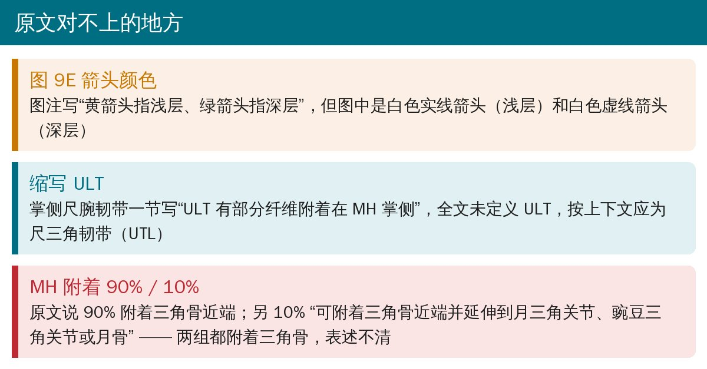
🔖编者核对原文时发现
原文还把 Kienböck 病拼成了“Keinbock”。以上不影响主要结论，供阅读原文时参考。
欢迎关注骨科康复小黄公众号，获取更多物理治疗的专业知识！
📄参考文献：
Winnett C, Fenech M. Sonographic Anatomy and Imaging of the Triangular Fibrocartilage Complex and the Distal Radio-Ulnar Joint. Australas J Ultrasound Med. 2025;28:e70012. doi:10.1002/ajum.70012
原文为 CC BY 4.0 开放获取（© 2025 The Author(s)，Wiley 代澳大拉西亚超声医学会出版）。本文为中文解读：原文图 1～9 及视频 1、2 截图引自原文，编者将图内英文改为中文并在图下加中文图例条；其余整理卡由编者根据原文撰写。